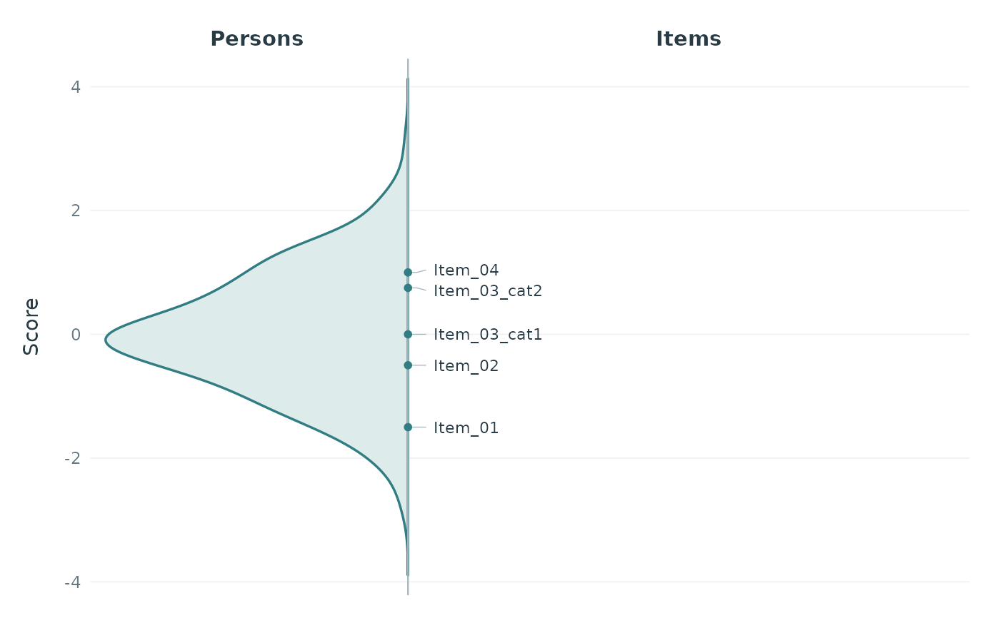
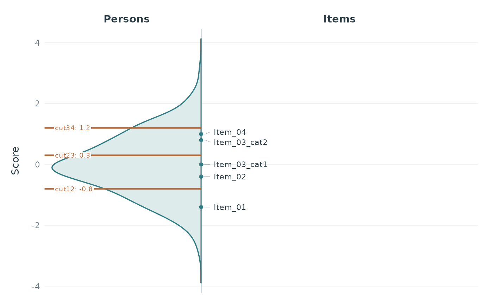
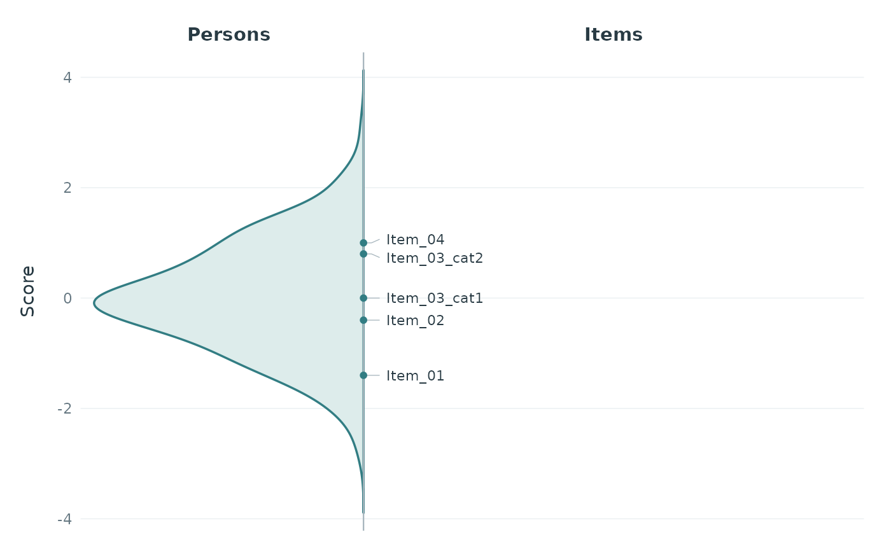

Plot a Classical Wright Map from Item Difficulties and Plausible Values
plotWrightMap.RdDisplays a vertical person distribution on the left and item names on the right,
separated by a continuous vertical line. A softly filled teal distribution,
subtle guides, and grouped item labels share a white background. Items on the
same display stage are separated by | and wrap with a hanging indent.
All supplied scores must already share one metric and dimension.
Usage
plotWrightMap(
items, pv_data, item_col = "item", difficulty_col = "difficulty",
pv_cols = NULL, respondent_id_col = NULL,
pv_id_col = NULL, pv_value_col = NULL, weight_col = NULL,
input_format = c("auto", "long", "wide"),
pv_missing = c("error", "drop"),
person_geom = c("density", "histogram"),
density_bw = NULL, density_adjust = 1, binwidth = NULL,
item_step = NULL, item_origin = 0,
person_prop = 0.35, item_size = 3, base_size = 11,
font_family = "", score_label = "Score", score_limits = NULL,
person_label = "Persons", item_label = "Items", title = NULL,
category_col = "category", person_fill = "#DDECEB",
person_colour = "#327D83", item_colour = "#293B44",
line_colour = "#A7B5BD", cuts = NULL, cut_labels = NULL,
show_cut_values = TRUE, cut_value_digits = 0L,
cut_value_size = 2.6, cut_colour = "#B26A3C",
population_col = NULL, population_colors = NULL,
population_alpha = NULL
)Arguments
- items
A named, finite numeric vector of item difficulties, or a data frame with columns selected by
item_colanddifficulty_col. Names must be non-empty and cannot contain tabs, newlines, or|. Vector names must be unique. Repeated identifiers in a table are disambiguated usingcategory_col. Factor name columns are accepted. No item parameter conversion is performed.- pv_data
Data frame containing plausible values for one dimension, optionally with multiple populations. PVs and item difficulties must already be on the same scale; this cannot be verified from numeric values alone.
- item_col, difficulty_col
Distinct column names for item names and difficulties when
itemsis a data frame. Ignored for a named vector.- category_col
Category column to consult only when item identifiers repeat, default
"category". For every repeated identifier, categories must be non-missing, non-empty character, factor, or finite numeric values. The combination of identifier and category must be unique. Only repeated identifiers receive a_cat<category>suffix, for exampleItem_03_cat1. Categories on unique identifiers are ignored and may be missing; the column need not exist if all identifiers are unique. Tabs, newlines,|, and collisions between resulting display names are rejected. The category column must differ from the identifier and difficulty columns.NULLdisables category lookup and rejects repeated identifiers.- pv_cols
Explicit character vector of numeric PV column names for wide input, with one row per respondent. Required for wide input.
- respondent_id_col
Optional respondent ID column for wide input; required for long input.
- pv_id_col, pv_value_col
PV identifier and numeric score columns for long input. Each respondent-PV combination must be unique.
- weight_col
Optional sampling-weight column. Weights must be finite, non-missing, non-negative, and constant across a respondent's PVs. Zero-weight rows are excluded;
NULLassigns equal weights.- input_format
"auto"chooses long input whenpv_id_colorpv_value_colis supplied, and wide input otherwise.- pv_missing
"error"rejects missing PV values or respondent-PV rows."drop"omits them with a warning and renormalizes weights within each PV. Each PV requires at least two observed respondents with positive weights within every population. Infinite scores and invalid weights always cause errors.- person_geom
Person distribution:
"density"(default) or"histogram". Both grow to the left from the central divider.- density_bw
Optional positive common bandwidth in score units, used only for density plots. The default averages unweighted
bw.nrd0bandwidths across PVs within populations, then equally across populations; sampling weights enter the density estimates.- density_adjust
Positive multiplier for the density bandwidth.
- binwidth
Positive histogram bin width in score units. Defaults to a pretty step targeting approximately 30 bins across the observed PV range. Bins are aligned to zero, left-closed and right-open, and cover all observed positive-weight PVs. At most 10000 bins are allowed. Used only for histograms.
- item_step
Non-negative distance between item display stages. By default a pretty step targets approximately 30 intervals across the combined range of item difficulties and observed positive-weight PVs. Use
0to display exact difficulties, grouping only identical values. Positive steps assign items to the nearest stage; exact halfway values go to the upper stage subject to floating-point precision.- item_origin
Finite origin of the item stage grid, default
0. Ignored whenitem_step = 0.- person_prop
Approximate proportion of panel width reserved for the person distribution, between 0.1 and 0.9. The remainder is used for item labels. A small additional margin is reserved to the left of the curve.
- item_size
Maximum item-label text size in millimetres. Labels wrap between complete item names to fit the final device width. Continuation lines have a hanging indent and start with
|; a bracket groups each block. Blocks are positioned near their stages without overlap, with leaders back to exact stage markers on the divider. Text is reduced uniformly only if all blocks cannot fit the panel or a single name is too wide. For extremely dense maps, increase the output size or adjustperson_propanditem_step.- base_size
Base theme font size in points.
- font_family
Font family used for both item labels and theme text.
- score_label
Vertical metric label, or
NULL.- score_limits
Optional finite, increasing pair of vertical display limits. These zoom the plot without changing the computed population estimates or item stages. Defaults to the full distribution and item range with padding. Labels outside the visible range are omitted from drawing.
- person_label, item_label
Headings above the person and item sides, respectively. Use
NULLto omit a heading.- title
Optional plot title.
- person_fill, person_colour
Fill and outline colours of the person distribution.
person_colouralso colours the item stage markers.- item_colour
Item text and heading colour.
- line_colour
Colour of the divider, item leaders, and grouping brackets. All four colour arguments accept a single valid R colour.
- cuts
Optional mean cuts on the same metric as the PVs and item difficulties. Accepts a finite non-decreasing numeric vector, a one-row
cuts_summarydata frame with numeric columns starting withcut, or a result ofcomputeCutsIDM. For the latter, onlycuts_summaryis used; individual rater cuts are never drawn. Missing cuts are rejected. Equal cuts share one mark and a combined label.NULL(default) leaves the original two-sided layout unchanged.- cut_labels
Optional unique non-empty names for the supplied cuts, in their original order. Defaults to vector names or summary column names, or
cut1,cut2, etc. for unnamed vectors. Tabs, newlines, and|are not allowed. Requirescuts.- show_cut_values
Append numeric values to the cut names. Defaults to
TRUE. Hiding values does not hide the cut marks or names.- cut_value_digits
Number of decimal places displayed for cut values, from zero to ten. Rounding never changes mark positions or stored values.
- cut_value_size
Maximum cut-label size in millimetres. Labels fit their space on the person side using the same wrapping and collision handling as item names.
- cut_colour
Colour of cut marks, labels, and their leaders.
- population_col
Optional grouping column in
pv_data. Population identifiers must be non-missing, non-empty character, factor, or finite numeric values. Groups appear in order of first occurrence. Respondent IDs must be unique within each population in wide input; IDs may recur in different populations. Weights and missing PVs are validated separately within groups.- population_colors
Optional named vector of R colours, with exactly one entry per population. Requires
population_col. The automatic palette matchesplotPopulationCuts. Group fills and outlines use these colours;person_fillandperson_colourstyle the ungrouped distribution, whileperson_colourstill sets item markers.- population_alpha
Opacity between zero and one.
NULLuses 0.25 for grouped fills and 1 for an ungrouped distribution. Group outlines remain opaque. In the ungrouped case this applies to both fill and outline.
Details
The vertical scale increases upwards. The horizontal size of the distribution shows its shape, normalized to a maximum panel width; it does not represent sample counts. There is no fixed aspect ratio, so either portrait or landscape output can be used.
When cuts are supplied, horizontal lines at their exact scores cross the
person densities or histograms and stop at the divider before the item names.
All populations share these lines. Cut labels appear on the person side with
white backgrounds for readability; no extra column is reserved.
Automatic score limits include all cuts;
explicit score_limits only zoom the display. Item stages and population
estimates are independent of cuts. Cut labels can move to avoid overlap, with
leaders pointing back to their fixed marks. All inputs must already use the
same metric; no rescaling is performed.
With population_col, distributions are overlaid on the person side
with a legend. Each population is normalized separately within each PV, then
averaged over its PVs. Densities share one score grid and bandwidth; histogram
bins are common to all groups. One horizontal scaling factor (the largest
density across all groups) preserves relative density heights. Widths compare
distribution shape, not group sample size. Items and supplied mean cuts are
common to all groups. Population calculations and colour validation are shared
with the other population plot functions.
Densities are estimated separately for each PV with normalized sampling weights
on a common grid and bandwidth, then averaged with equal weight for each PV.
Histograms likewise average per-PV weighted relative frequencies on common bins.
PVs are never averaged within respondents before estimating the distribution.
The shared PV input validation and density calculation are also used by
plotPopulationCuts.
Item stages affect display only. For a positive step, the displayed position is
item_origin + item_step * floor((difficulty - item_origin) / item_step + 0.5).
The maximum displacement is half a step, apart from floating-point precision.
Items within a stage retain their input order. Original difficulties remain
available in the returned data. Category-specific parameters may be supplied
with repeated identifiers plus a category column, or with already unique names.
The function does not derive thresholds. Text blocks may move to avoid overlap;
their stage markers and the population distribution retain their score positions.
Value
A ggplot object that can be customized and saved with
ggplot2::ggsave(). Its "wright_data" attribute is a list containing:
- items
Input-order data frame with displayed
item, originalitem_id,category(NAfor unique identifiers), originaldifficulty, and displayedstage.- item_labels
Sorted display stages and their combined
label.- population
For density plots,
scoreand meandensity. For histograms,lower,upper, mean binproportion, anddensity(proportion divided by bin width). These values precede horizontal scaling for display. With grouped input, apopulationfactor identifies the population for each row.- cuts
When supplied, a data frame of unrounded
cutvalues and theirlabel, including separate entries for equal values.- person_geom, item_step, item_origin, binwidth
Resolved plotting settings;
binwidthisNULLfor density plots.
Examples
set.seed(42)
persons <- data.frame(
id = 1:200,
PV1 = rnorm(200), PV2 = rnorm(200), PV3 = rnorm(200),
weight = runif(200, 0.5, 2)
)
items <- data.frame(
item = c("Item_01", "Item_02", "Item_03", "Item_03", "Item_04"),
category = c(NA, NA, 1, 2, NA),
difficulty = c(-1.5, -0.45, 0.02, 0.85, 0.95)
)
p <- plotWrightMap(items, persons, pv_cols = paste0("PV", 1:3),
weight_col = "weight", item_step = 0.25)
p

attr(p, "wright_data")$items
#> item item_id category difficulty stage
#> 1 Item_01 Item_01 <NA> -1.50 -1.50
#> 2 Item_02 Item_02 <NA> -0.45 -0.50
#> 3 Item_03_cat1 Item_03 1 0.02 0.00
#> 4 Item_03_cat2 Item_03 2 0.85 0.75
#> 5 Item_04 Item_04 <NA> 0.95 1.00
# Optional mean cuts across the person distribution.
plotWrightMap(items, persons, pv_cols = paste0("PV", 1:3),
cuts = c(cut12 = -0.8, cut23 = 0.3, cut34 = 1.2),
cut_value_digits = 1)

# An IDM result can be passed directly; only cuts_summary is used:
# plotWrightMap(items, persons, pv_cols = paste0("PV", 1:3), cuts = idm_result)
# Named vector and optional histogram.
plotWrightMap(c(A = -1, B = 0, C = 1), persons,
pv_cols = paste0("PV", 1:3), person_geom = "histogram",
binwidth = 0.25)
 # The equivalent long PV layout.
long <- tidyr::pivot_longer(persons, c("PV1", "PV2", "PV3"),
names_to = "pv", values_to = "score")
plotWrightMap(items, long, respondent_id_col = "id",
pv_id_col = "pv", pv_value_col = "score", weight_col = "weight")
# The equivalent long PV layout.
long <- tidyr::pivot_longer(persons, c("PV1", "PV2", "PV3"),
names_to = "pv", values_to = "score")
plotWrightMap(items, long, respondent_id_col = "id",
pv_id_col = "pv", pv_value_col = "score", weight_col = "weight")
